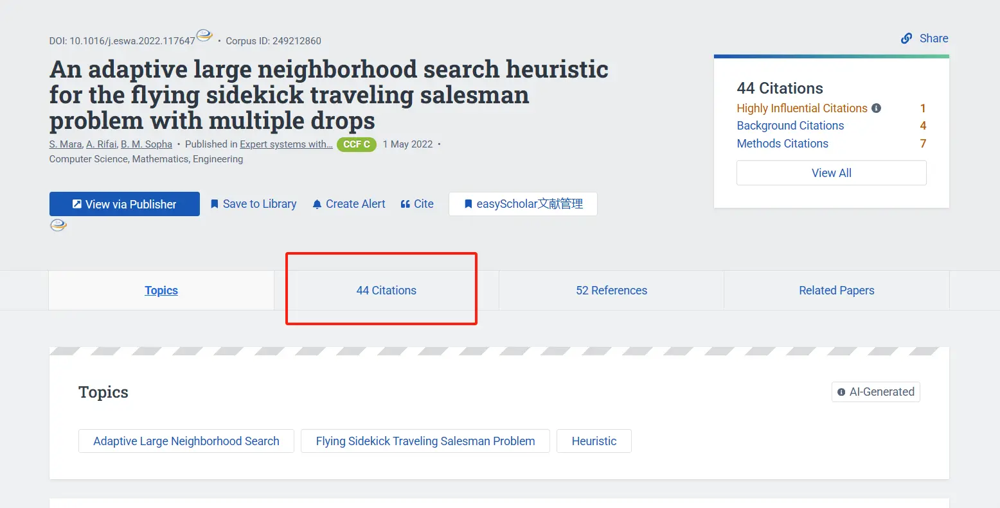
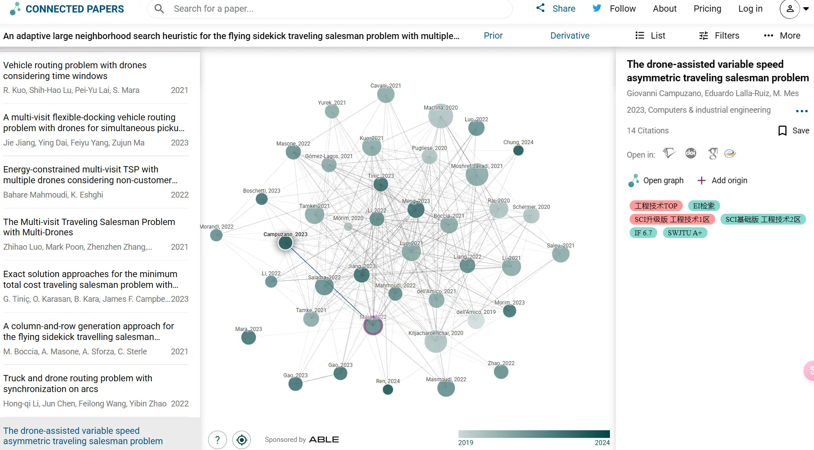

Academic - 初入学术殿堂
本文最后更新于：2025年8月7日 晚上
文献相关
检索引擎
主要的搜索引擎：
- 中国知网 (cnki.net) - 著名垄断机构，不多介绍
- Document Search - All Databases (webofscience.com) - 主要用来查英文文献
Web of Science的基本检索技巧
A. 不区分大小写：Gold catalysis 与 gold CATALYSIS 检索结果一致。
B. 检索运算符（布尔运算符）：AND（与），OR（或），NOT（非）, NEAR，SAME。其中最常用的是前三种。使用 AND 可查找包含被该运算符分开的所有检索词的记录；使用 OR 可查找包含被该运算符分开的任何检索词的记录；使用 NOT 可将包含特定检索词的记录从检索结果中排除；使用 NEAR/x 可查找由该运算符连接的检索词之间相隔指定数量的单词的记录；在“地址”检索中，使用 SAME 将检索限制为出现在“全记录”同一地址中的检索词。
C. **通配符（*？\(）**：星号 (\*) 表示任何字符组，包括空字符(如Fan J*可以指Fan Jie，Fan Jun, Fan Jian, Fan Jia等)；问号 (?) 表示任意一个字符，对于检索最后一个字符不确定的作者姓氏非常有用。例如，Barthold? 可查找 Bartholdi 和 Bartholdy，但不会查找 Barthod；美元符号 (\$) 表示零或一个字符，对于查找同一单词的英国拼写和美国拼写非常有用。例如，flavo\)r 可查找 flavor 和 flavour。
D. 括号：括号用于将合成布尔运算符进行分组。例如：
- (Antibiotic OR Antiviral) AND (Alga* OR Seaweed)
- (Pagets OR Paget's) AND (cell* AND tumor*)
- PubMed (nih.gov) - 文献相关度高，主要用于关键词精确查找相关文献
- Google Scholar - 搜索的文献量大，相关性会低一些
- Mendeley - Reference Management Software
- Sci-Hub 不用多介绍，将知识带给每个人
Sci-Hub 主要用于精确搜索，要先获取需要文献的 DOI (Digital Object Unique Identifier)，然后再根据 DOI 去找对应的 PDF。
DOI 是指数字对象唯一标识符，可以理解为数字资源唯一的“身份证号码”，可以用DOI来标识文献、视频、报告或书籍等数字资源。目前，大部分学术文献（主要为2000年之后的文献）都有专属的 DOI，只要知道了一篇文献的 DOI，就能够查询到该文献的作者、标题、期刊、官方链接等信息。
每个 DOI 都由前缀和后缀两部分组成，之间用 / 分开，并且前缀以 . 再分为两部分。前缀由国际数字对象识别号基金会（International DOI Foundation）确定，后缀部分由资源发布者自行指定，用于区分一个单独的数字资料，具有唯一性。
一般来说，年份久远（2000年之前）的文献没有 DOI。至于中文文献，因为目前国内 DOI 的使用还处于初级阶段，所以现在还不能通过 DOI 来下载国内文献。
所有 DOI 均以“10”开头，如：
10.1016/j.foodres.2017.07.078
10.1080/09205063.2018.1465664
镜像网址：
- Sci-Hub: 将知识带给每个人
- Sci-Hub: 对每个人的知识
- Sci-Hub: 对每个人的知识
- Sci-Hub: 对每个人的知识
- Sci-Hub: 将知识带给每个人
- Sci-Hub: 将知识带给每个人
- Sci-Hub journal:latest sci-hub mirror links
- sci-hub proxy search links
- Sci-Hub: removing barriers in the way of science
- Sci-Hub official website
- Sci-Hub: 对每个人的知识
- sci-hub brasil (wellesu.com)
- Science Hub (tesble.com)
- sci-hub:scihub最新可用地址 (kvnp.top)
- Sci-Hub journal:latest sci-hub mirror links
论坛：
其他：
- Home Feed | ResearchGate
- PubsOnLine (informs.org)
- 文献互助平台 - 科研通(AbleSci.com)
- PubScholar公益学术平台
- 学术范 - 高效做科研 (xueshufan.com)
- 百度学术 - 保持学习的态度 (baidu.com)
- 搜索 学术 (bing.com)
- 谷粉学术论坛-文献互助 (yuyingufen.com)
- Crossref Metadata Search
- Sci-Hub:SciHub科研学术网址导航
查找文献中的代码
- CatalyzeX: open-source AI code to catalyze your research
- The latest in Machine Learning | Papers With Code
- GitHub：一般通过 Google Scholar 可以找到相应的作者，然后顺藤摸瓜可以找到相应的 GitHub 仓库，或者直接检索相应的模型，如果都没有的话可能需要用其他办法
- 直接发邮件给 Paper 作者
查找相关的文献
这里说的相关，既包括引用（这个比较容易找到）和被引，也包括主题相关（大多数时候关键词检索很难找到想要找的文献）。
- Semantic Scholar | AI-Powered Research Tool：可以通过查找引用这篇文章的 Paper 来寻找相关的文献

- Connected Papers | Find and explore academic papers：
- 年份越往后的颜色越深，越往前则颜色越浅
- 文献之间的关系是通过相似性而不是引用来连接
- 文献节点的大小表示被引用的次数的多少

读文献的方法论
- 你认为在精读英文文献时有哪些好习惯？ - 知乎 (zhihu.com)
- 研究生们刚开始看英文文献是怎么看的？ - 知乎 (zhihu.com)
- 研究生新生要怎么看论文？ - 知乎 (zhihu.com)
- 研究生新生要怎么看论文？ - 知乎 (zhihu.com)
- 如何有针对地高效地阅读一篇学术论文？ - 知乎 (zhihu.com)
论文降重
- PaperPass官网-论文查重-论文降重-论文检测-免费论文查重检测系统-智齿数汇
- Scribbr Plagiarism Checker step 1 – Upload document - Scribbr
- 知网查重-知网个人查重服务 (cnki.net)
文献翻译
- CopyTranslator
- 知云文献翻译客户端软件 (zhiyunwenxian.cn)
- 彩云小译官网 - 高效准确的翻译工具 | 文字翻译 | 文档翻译 | 网页翻译 | 浏览器插件 | 双语对照 | 术语库 (caiyunapp.com)
- Atman Cloud Translation (atman360.com) - 主要针对医学领域
其他
- CSRankings: Computer Science Rankings - 根据文献对学校/机构进行排名，针对计算机
FAQ
知网中期刊的“综合影响因子”和“复合影响因子”分别是什么意思？
最通俗的解释就是，被引用次数和发表论文总数的占比。分值越高证明该期刊含金量以及大家认同度越高。当然这个分值也不是绝对的，很多期刊收录的论文不管引用还是下载量很高，没有任何影响因子。所以很少有单位评判一本期刊好坏以此为依据。目前大家评判标准还是以：
- 国内：南核—北核—科核—知网专刊——知网收录——其它数据库（万方、维普、龙源）
- 国际：SSCI——SCI——EI——CPCI